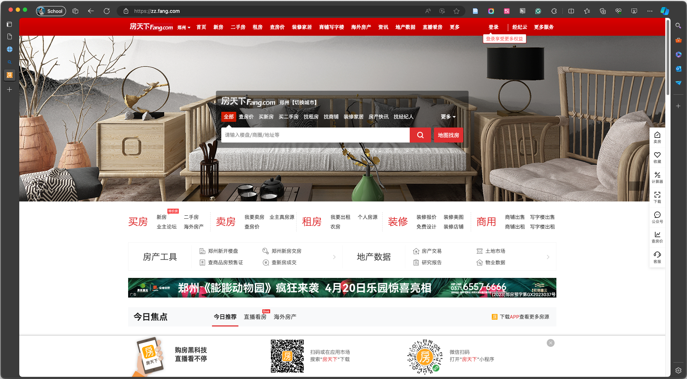
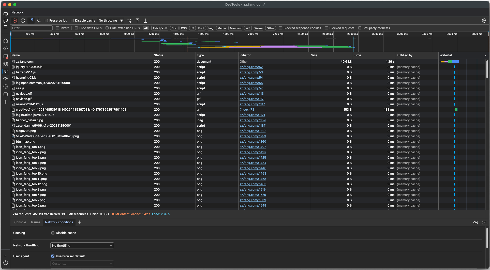
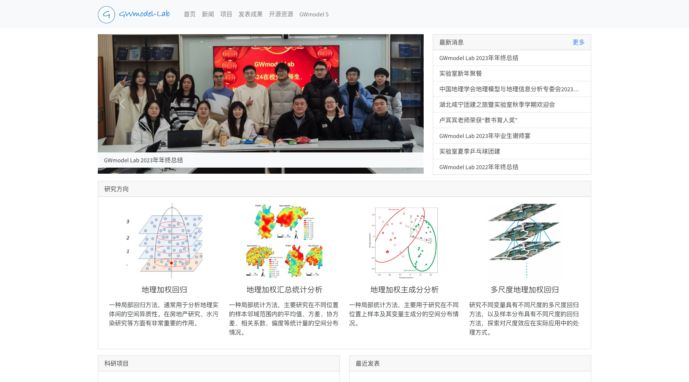
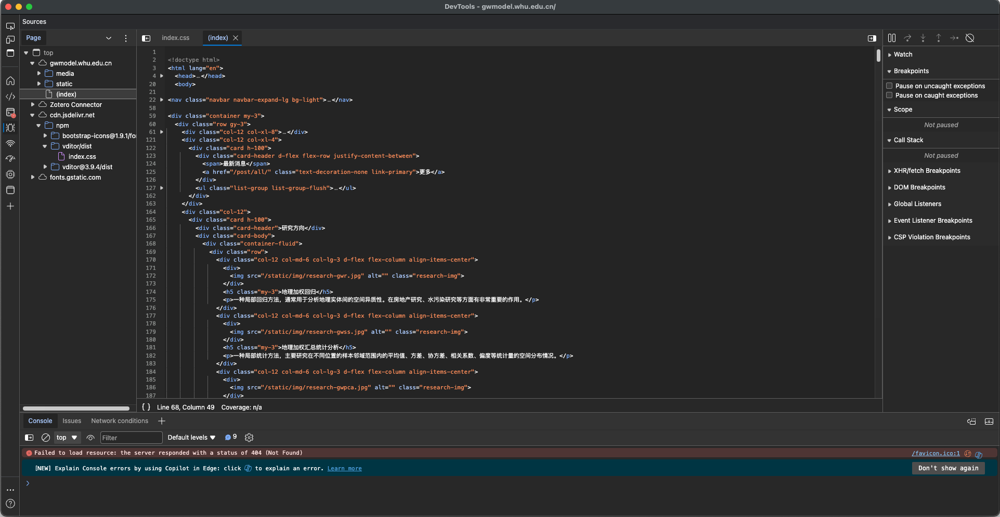
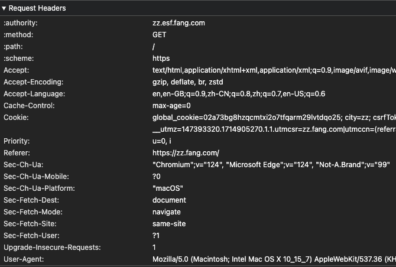
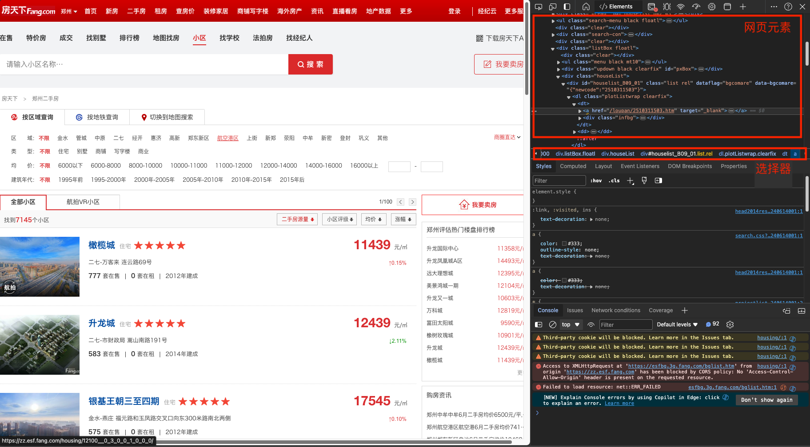

sequenceDiagram
participant 计算机
participant 服务器
计算机 ->> 服务器: 请求1
服务器 ->> 计算机: 响应1
计算机 ->> 服务器: 请求2
服务器 ->> 计算机: 响应2
互联网定义了很多协议，用于计算机之间进行通信。 为了在通信过程中传输数据，又定义了一些格式。
互联网中最常见的信息交互协议是 HTTP，后来为了增加安全性，在 HTTP 协议基础上出现了 HTTPS 协议。 浏览器主要处理的就是 HTTP 协议传输的数据，按下 F12 打开开发者工具就可以看到就网络传输的过程。


HTTP 协议的工作方式是请求和响应。
计算机向服务器发送 HTTP 请求，并提供给服务器一些数据。
服务器根据请求内容，给计算机发送相应的数据。
sequenceDiagram
participant 计算机
participant 服务器
计算机 ->> 服务器: 请求1
服务器 ->> 计算机: 响应1
计算机 ->> 服务器: 请求2
服务器 ->> 计算机: 响应2
但本质上，请求和响应都是按照一定格式发送的数据。 只要我们按照这种格式发送数据，就可以实现交互。
互联网上的资源非常多，计算机是怎么知道要向哪里发送请求呢？ 通常使用的是 URL ，俗称地址。
协议://域名/路径?查询字符串
https://zz.esf.fang.com/chushou/3_183860422.htm?channel=2,2&psid=1_1_60 https://restapi.amap.com/v3/place/text?city=zhengzhou&offset=20&page=1
只要按照上述方式拼接字符串，就是一个合法的 URL 。
URL 中使用 / 作为路径的分割符。 这里的路径与文件系统中的路径的含义可能是相同的，也能是不同的，存在某种特殊的映射关系。
静态页面
静态页面是在服务器上固定的文件，URL 后面通常以 .html .htm 等结尾。 服务器根据路径直接发送文件内容，过程类似于下载。 静态页面的路径一般情况下与文件系统一一对应，而且也不支持查询字符串。
例如 http://gwmodel.whu.edu.cn/ 都是静态页面。
动态页面
服务器根据路径或模板临时渲染一个页面，URL 通常没有固定类似于扩展名的结尾，或者以 .jsp .php 等结尾。 通常支持查询字符串。
如果把路径比作函数，那么查询字符串就类似于参数。 服务器会根据查询字符串返回相应的页面。
?name1=value1&name2=value2
重要
? 开始，否则被视为是路径。& 连接。= 连接。域名部分完整的格式其实是 用户名:密码@域名:端口 ， 但这四个部分除了域名以外都是可以省略的，所以通常情况下只需要写域名即可。
重要
除了在 URL 里面提供参数，请求也可以发送一些数据，但这些数据要按照一定的格式转换为字符串，也就是“序列化”。 常用的格式有：
form-data ：表单格式，最早的发送请求数据的方式，通常用于页面表单。可以用来传文件。json ：常用于网络接口，用于在发送一些特别复杂的数据。xml ：通常也用于网络接口，有一些比较复杂的网络服务需要以这种方式提供数据。除了这些格式以外，每个服务都可以以自己的方式处理数据，所以需要研究页面，对症下药。
发送请求时，除了要指定请求地址，还要指定请求方式（Method）。 常用的请求方式有
GET: 通常表示“仅获取”。是一般 HTTP 请求最常用的方式。在 REST 接口中表示“查询”。POST: 通常表示“提交”，提交表单数据时常用这个方式。在 REST 接口中表示“添加”数据。PUT: 常用于 REST 格式的网络接口中，用于表示“修改”数据。DELETE: 常用于 REST 格式的网络接口中，用于表示“删除”数据。最常见的响应。 可以是静态的 HTML 文档，也可以是服务器渲染出来的 HTML 格式文档。 浏览器可以根据文档内容渲染页面，这是最早的浏览器的默认工作方式。


通过开发者工具可以看到，要正常地显示一个页面，除了 HTML 响应以外，还有很多其他类型的响应。例如 样式表（CSS，用于描述页面的样式）、脚本和图片等。
随着网络技术的发展，有时一个服务可能只响应一些数据，并不提供页面。 这种相应的格式一般是 JSON 或者 XML。 目前绝大多数网站已经支持了 JSON 格式的响应，不会只提供 XML 格式的响应。
下面是一个 XML 响应的例子
问题
不论请求响应以何种格式传输数据，传过来的都是字符串，那我们如何判断传过来的是什么格式的字符串呢？
事实上，一个请求或响应由两部分构成：头（Header）和体（Body）。 请求数据和响应数据指的都是“体”。 而为了辅助处理体，“头”中有很多非常重要的信息。
在开发者工具中就可以看到请求头的信息

一些重要的头
Content-Type: 发送的请求数据的格式。Accept: 接受的响应内容的格式，服务器根据这个字段设置响应格式。User-Agent: 用于识别浏览器的信息。Cookie: 通常保存在浏览该域名时保存的一些数据，可以用于用户认证。同样在开发者工具中可以看到响应头，一些比较重要的是：
Status: 极为重要！这里的代码反映了请求的状态。
200: 请求成功。404: 找不到资源，通常是路径导致的错误。500: 内部服务器错误，通常是请求参数或者数据错误。Content-Type: 响应体的格式。Content-Encoding: 响应体编码，通常是一些压缩数据的格式，例如 gzip 等，解压后可得到原始数据。HTTP 协议有一大特点：“无状态”。任何两次 HTTP 请求和响应都是独立的，服务器不会保存任何与请求有关的信息。 但用户往往需要在不同页面之间跳转以完成一个工作，这种情况下就必然需要一些信息关联不同的页面。
Cookie 就是一种保存必要数据的方法。 每次发送请求时，Cookie 都会自动放在请求头中发送。
由 HTML 语言描述内容，CSS 语言描述格式。
每个网页都是由 HTML 格式的文本文件描述的，该文件中主要包含页面内容。
重要
HTML 是 XML 格式的一个变体，都是标记语言。 这里的概念大多也适用于 XML 格式。
一对开闭标签 <tag> </tag> 包裹的部分就是一个元素，< 后面的紧跟的单词就是元素名。 例如 <title></title> 就是一个名为 title 的元素。
在 <tag> 和 </tag> 中间的部分是元素的内容，可以是纯文本，也可以是其他元素。 这样就构成了一个嵌套关系，并有层级。
如果没有内容，那么也会写成 <tag/> 的样式，有些元素也支持直接写成 <tag> 。
常见元素
<html> 根元素<head> 文档元数据，不显示<title> 文档标题<style> 文档样式，CSS 格式<link> 链接文件，通常是 CSS 文件<meta> 其他属性<body> 文档内容<a> 链接<span> 一段文字<img> 图片<br/> 换行<strong> 强调<iframe> 内嵌页面<div> 单纯表示一个块<header> <footer> 页头和页脚<nav> 导航栏<h1> <h2> … <h6> 标题<p> 段落<ul> 无序列表 <li> 列表元素<ol> 编号列表<dl> 术语列表 <dt> 术语 <dd> 详细描述<table> 表格 <thead> 表头 <tbody> 内容<tr> 表格一行 <th> 表头格 <td> 内容格<script> 脚本，指定地址或者内容元素名后、> 之前的一系列 name="value" 格式的内容就是该元素的属性。 每个元素可以有很多属性，但一个元素中的属性不能重复，就像类不能有重名的成员。 闭标签中不写属性。
这个元素有两个属性： id 值为 main，class 值为 container。
常见属性
id 元素唯一编号，全文档的值唯一class 样式类，将在 CSS 中有重要作用style 显示该元素的 CSS 格式样式<a> 的 href 表示链接地址<img> 的 src 表示图片地址可以看到，元素通过嵌套形成了一个层级结构，这种数据结构叫做“树”。 对于某一级元素而言，包裹它的元素是父(ancestor)元素，它包裹的元素是子(child)元素，与它同级的元素叫兄弟(sibling)元素。
- html ----------------> 根元素
- head
- meta
- meta
- title
- body --------------> 祖先元素
- div -------------> 父元素(直接祖先)
- p -------------> 兄弟元素
- p -------------> 若以该元素为目标
- span --------> 子元素(直接后代)
- strong ----> 后代元素通过元素间的相对关系可以准确定位元素。
虽然在 HTML 中可以设置样式，但通常通过 CSS 文件设置样式。 CSS 文件分别指定每种元素的显示格式，通常是由很多块组成的。
选择器 {
样式表
}例如
在编写爬虫时，CSS 样式并不影响数据内容，但 CSS 选择器依然是个非常有用的定位元素的工具。
元素名 选择该名称的元素.class值 选择 class 属性为该值的元素#id值 选择 id 为该值的元素[attr] 选择具有 attr 属性[attr=value] 选择属性 attr 为 value 的元素这些选择器可以组合使用，例如 div.container 选择元素名为 div 且类名为 container 的元素； div.main.container 选择同时具有 main container 两个类的 div 元素。
从左到右逐步缩小范围，最终根据最后一个选择器选择元素
A B 在 A 所有后代中选择 BA > B 在 A 直接后代中选择 BA ~ B 在 A 兄弟中选择 BA + B 在 A 紧邻兄弟中选择 BA, B 将选出 A 和 B 选择的所有元素
A:first-child, A:last-child 符合 A 并且是其父级的第一个、最后一个子元素A:first-of-type, A:last-of-type 符合 A 并且是其父级第一个、最后一个符合 A 的元素A:nth-child(n), A:nth-last-child(n) 符合 A 并且是其父级第 n 个、倒数第 n 个子元素A:nth-of-type(n), A:nth-last-of-type(n) 符合 A 并且是其父级第 n 个、倒数第 n 个符合 A 的元素A:only-child 符合 A 并且是其父级唯一一个子元素A:only-of-type 符合 A 并且是其父级唯一一个符合 A 的元素:not(A) 除 A 以外的所有元素A:empty 没有任何子级的 A 元素以下选择器选择了什么？
浏览器的开发者工具，可以查看网页元素，分析元素层级关系。 下面也有一个区域显示了一个 CSS 选择器，但该选择器不一定可以用于爬虫。
由于 HTML 也是一种 XML 格式，因此可以按照选择 XML 元素的方法选择 HTML 元素， 这种方法就是 XPath 选择器。
//title/text()
a[href*=image]::attr(href)但事实上，还是 CSS 选择器更好一点。HTML 并不是一种严格的 XML 格式，有时会出现错误。 而且 CSS 选择器有开发者工具提示，XPath 选择器只能自己写。